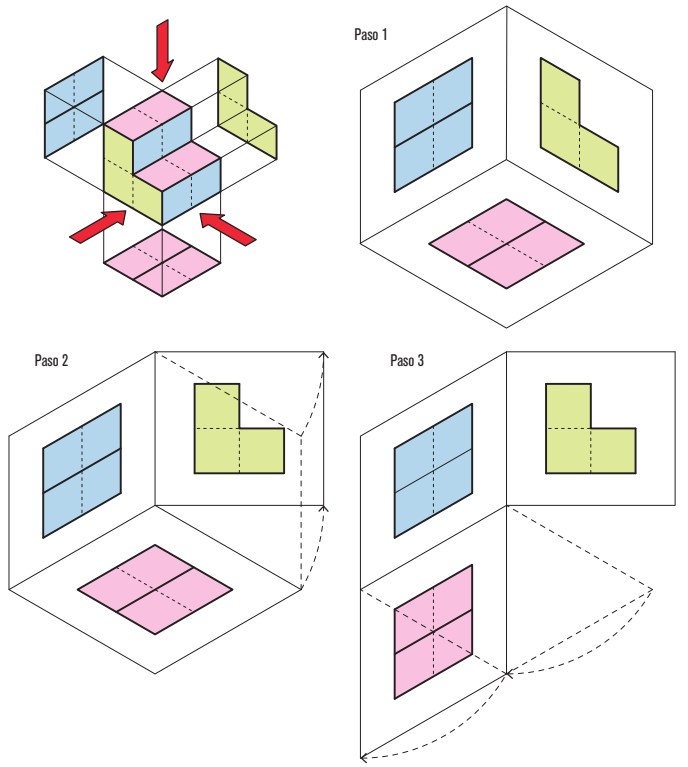
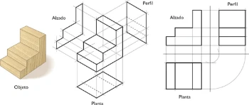
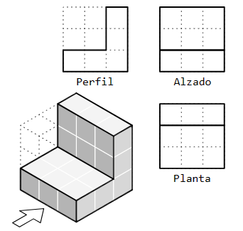
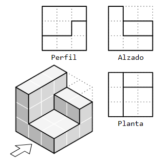
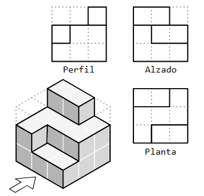
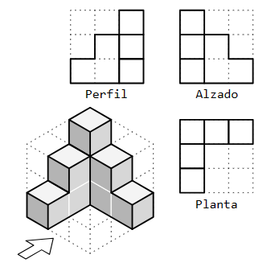

Los objetos que nos rodean existen en tres dimensiones, lo que significa que tienen volumen. Cuando intentamos representar estos objetos en un plano bidimensional, como una lámina de dibujo, surge un desafío. Para superar esta dificultad, recurrimos a la perspectiva en el dibujo, que nos permite dar la ilusión de profundidad y volumen.
2. Descubriendo
En el contexto del dibujo en perspectiva, es fundamental comprender que los objetos tridimensionales deben ser representados en una superficie plana, que posee únicamente dos dimensiones. En muchas ocasiones, los objetos que deseamos dibujar son muy complejos y necesitamos mostrar múltiples vistas o detalles para proporcionar una representación precisa. Para lograr esto, empleamos las denominadas "vistas" de los objetos.
Las vistas de un objeto son representaciones en dos dimensiones de cada una de las caras o perspectivas del objeto tridimensional. Ya que los objetos pueden observarse desde múltiples ángulos, como desde arriba, desde abajo, desde el frente, desde atrás, desde el lado izquierdo y desde el lado derecho, podemos afirmar que tienen un total de seis vistas posibles.
Las vistas principales de un objeto son las siguientes:
Alzado: El alzado es la vista frontal o principal de la pieza. A menudo se identifica mediante una flecha que la señala como la vista predominante.
Planta: La planta es la vista superior de la figura y se coloca debajo del alzado. Muestra cómo se ve el objeto desde arriba.
Perfil: El perfil es la vista lateral de la pieza. Esta vista se puede dividir en dos: el perfil izquierdo, que se ubica a la derecha del alzado, y el perfil derecho, que se sitúa a la izquierda del alzado. Estas vistas laterales nos ofrecen diferentes perspectivas de los objetos desde los lados.
En resumen, las vistas de un objeto son esenciales para representar objetos tridimensionales de manera precisa en un plano bidimensional, como un dibujo. Las vistas principales, como el alzado, la planta y el perfil, nos permiten capturar diferentes aspectos del objeto desde distintos ángulos, lo que facilita su comprensión y representación.
OBTENCIÓN DE VISTAS
Para obtener las vistas de la figura y disponerlas correctamente, piensa en ello como si estuvieras desplegando los planos donde has representado cada una de las proyecciones:

De un objeto, podemos obtener un total de seis vistas (piensa en las seis caras de un dado). Sin embargo, para lograr una definición completa del objeto, no es necesario representar todas las vistas en todo momento. Por lo general, resulta suficiente con representar tres de ellas, conocidas como las vistas principales. Como hemos explorado previamente, estas vistas principales son el alzado, la planta y uno de los dos perfiles.
La disposición de las vistas es crucial, ya que sigue un estándar normativo. Por lo tanto, es importante siempre colocarlas en el siguiente orden:

Lectura facilitada
En el contexto del dibujo en perspectiva, es fundamental comprender que los objetos tridimensionales deben ser representados en una superficie plana, que posee únicamente dos dimensiones.
En muchas ocasiones, los objetos que deseamos dibujar son muy complejos y necesitamos mostrar múltiples vistas o detalles para proporcionar una representación precisa.
Para lograr esto, empleamos las denominadas "vistas" de los objetos.
Las vistas de un objeto son representaciones en dos dimensiones de cada una de las caras o perspectivas del objeto tridimensional. Ya que los objetos pueden observarse desde múltiples ángulos, como desde arriba, desde abajo, desde el frente, desde atrás, desde el lado izquierdo y desde el lado derecho, podemos afirmar que tienen un total de seis vistas posibles.
Las vistas principales de un objeto son las siguientes:
Alzado: El alzado es la vista frontal o principal de la pieza. A menudo se identifica mediante una flecha que la señala como la vista predominante.
Planta: La planta es la vista superior de la figura y se coloca debajo del alzado. Muestra cómo se ve el objeto desde arriba.
Perfil: El perfil es la vista lateral de la pieza. Esta vista se puede dividir en dos: el perfil izquierdo, que se ubica a la derecha del alzado, y el perfil derecho, que se sitúa a la izquierda del alzado.
Estas vistas laterales nos ofrecen diferentes perspectivas de los objetos desde los lados.
En resumen, las vistas de un objeto son esenciales para representar objetos tridimensionales de manera precisa en un plano bidimensional, como un dibujo. Las vistas principales, como el alzado, la planta y el perfil, nos permiten capturar diferentes aspectos del objeto desde distintos ángulos, lo que facilita su comprensión y representación.
OBTENCIÓN DE VISTAS
Para obtener las vistas de la figura y disponerlas correctamente, piensa en ello como si estuvieras desplegando los planos donde has representado cada una de las proyecciones:
De un objeto, podemos obtener un total de seis vistas (piensa en las seis caras de un dado). Sin embargo, para lograr una definición completa del objeto, no es necesario representar todas las vistas en todo momento.
Por lo general, resulta suficiente con representar tres de ellas, conocidas como las vistas principales.
Como hemos explorado previamente, estas vistas principales son el alzado, la planta y uno de los dos perfiles.
La disposición de las vistas es crucial, ya que sigue un estándar normativo. Por lo tanto, es importante siempre colocarlas en el siguiente orden:
3. En vídeo
4. ¡Vamos con un ejemplo!
Observa cómo se representan las vistas alzado, perfil y planta con estos cuatro ejemplos:
Ejemplo 1

Ejemplo 2

Ejemplo 3

Ejemplo 4

4. ¡No te desvíes!
Llega el momento de poner en práctica lo aprendido. Formad grupos de cinco, de manera que unos grupos trabajarán la representación de el alzado, otros el perfil y otros la planta.
Una vez hayáis aprendido a manejaros con los diferentes tipos de vistas volved a vuestro grupo de origen para:
Explicar cómo representar las diferentes vistas a vuestros compañeros realizando con ellos los ejercicios que habéis hecho anteriormente.
Aprender a representar las demás vistas realizando los ejercicios propuestos.
Lectura facilitada
Llega el momento de poner en práctica lo aprendido. Formad grupos de cinco, de manera que unos grupos trabajarán la representación de el alzado, otros el perfil y otros la planta.
Una vez hayáis aprendido a manejaros con los diferentes tipos de vistas volved a vuestro grupo de origen para:
Explicar cómo representar las diferentes vistas a vuestros compañeros realizando con ellos los ejercicios que habéis hecho anteriormente.
Aprender a representar las demás vistas realizando los ejercicios propuestos.
 Los objetos que nos rodean existen en tres dimensiones, lo que significa que tienen volumen. Cuando intentamos representar estos objetos en un plano bidimensional, como una lámina de dibujo, surge un desafío. Para superar esta dificultad, recurrimos a la perspectiva en el dibujo, que nos permite dar la ilusión de profundidad y volumen.
Los objetos que nos rodean existen en tres dimensiones, lo que significa que tienen volumen. Cuando intentamos representar estos objetos en un plano bidimensional, como una lámina de dibujo, surge un desafío. Para superar esta dificultad, recurrimos a la perspectiva en el dibujo, que nos permite dar la ilusión de profundidad y volumen.